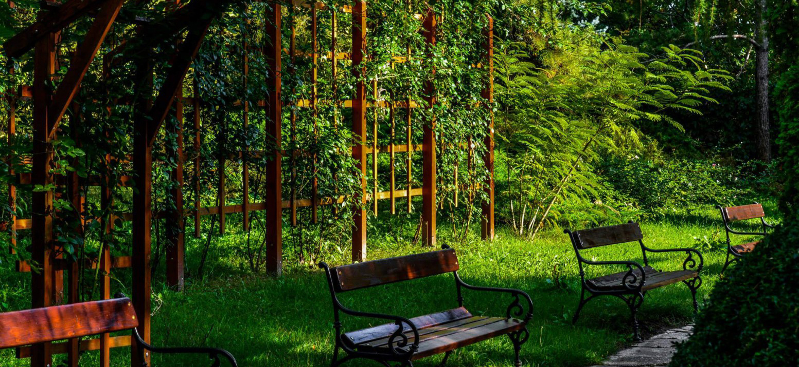
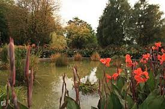
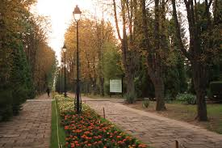
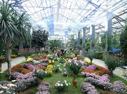
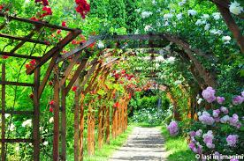

Grădina Botanică din Iași

Istorie
Prima grădină botanică, înființată în 1856 de Anastasie Fătu la Râpa Galbenă, a existat până la moartea creatorului ei, în 1886, când terenul a fost vândut de către urmașii lui. O stradă situată aici perpetueză memoria lui Anastasie Fătu.
În 1873, Societatea de Medici și Naturaliști din Iași înființează o a doua grădină botanică, în apropiere de cea veche. Sarcina de organizare a acesteia revine lui Dimitrie Brândză, iar majoritatea plantelor au fost donate de către Anastasie Fătu. Unele dintre plantele cultivate atunci mai există și astăzi, în curtea Muzeului de Istorie Naturală.
În 1870, Universitatea Al.I. Cuza
hotărăște să construiască ea însăși o grădină botanică, în spațiul actual al Institutului de Medicină și Farmacie, care este extinsă în 1876. Dar, pentru că nici acum aceasta nu corespundea standardelor de învățământ, se planifică crearea uneia în spatele Palatului Culturii, care însă nu este finalizată din lipsă de fonduri, iar ulterior din pricina Primului Război Mondial.
Astfel, în 1921, profesorul Alexandru Popovici înființează o grădină botanică nouă în spatele clădirii Universității noi, unde construiește și mici sere, folosite pentru creșterea plantelor tropicale. Această locație se păstrează pentru mai bine de 40 de ani, până în 1963. În acest an se hotărăște mutarea grădinii în spațiul actual, pe Dealul Copoului, sub supravegherea profesorului Emilian Țopa, pentru ca aceasta să satisfacă cerințele de învățământ.
În anul 1973, directoratul instituției a fost preluat, neremunerat, de botanistul ieșean Mandache Leocov: Mi-au spus că au nevoie de mine un an, un an și jumătate. Eram îndrăgostit de plante, făcusem doctoratul în botanică agricolă. Un an s-a transformat în 17 ani. Grădina avea atunci 43 de hectare, am lăsat-o cu 105 hectare. Cu excepția unei suprafețe de șase hectare, toate terenurile pe care le-am preluat erau neproductive, aride. Marea majoritate erau așa de degradate că le-a abandonat Gostat-ul. Am făcut împrejmuirea, extinderea rețelei de ape, de drumuri, am stins ravenele, am făcut lacurile, centrele gospodărești. Vreo patru ani de zile am organizat serele grădinii botanice. O parte din serele de arbori tropicali sunt tot din vremea mea. Expoziția de crizanteme tot eu am început-o
, își amintește Leocov. Acesta a publicat, în 1988, altături de Emilian Țopa, Ion Sârbu, Ionel Lupu, Rodica Rugină și Corneliu Tăbăcaru, lucrarea de referință Ghidul Grădinii Botanice, lărgind în același timp sfera de relații a instituției universitare cu alte grădini botanice din lume.
Astăzi, Grădina Botanică din Iași acoperă o suprafață de aproximativ 100 de hectare, fiind una din cele mai mari din Europa.





Organizare
- Secția Sistematică
- Are o suprafață de 5 hectare, pe care se cultivă aproximativ 2000 de specii de plante, aranjate pe încrengături, ramuri, ordine și familii, conform înrudirilor naturale. Sectorul Sistematic se adresează în special elevilor și studenților, care au astfel un material biologic viu, cu ajutorul căruia pot înțelege mai bine unitatea și diversitatea lumii vii.
- Complexul de sere
- Este format din 12 sere, fiecare ocupându-se de un anumit aspect din flora și vegetația lumii: plante mediteraneene, tropicale, subtropicale (colecții de cactuși), flori ornamentale (36 soiuri de azalee și 469 soiuri de crizanteme).
- Secția Ornamentală
- Secția Flora și vegetația României
Este cel mai întins din grădina botanică, având o suprafață de 25 ha. În crearea acestuia s-a urmărit redarea etajelor de vegetație existente în România pe verticală și caracteristicile (din punct de vedere al florei și vegetației) fiecărei provincii a țării pe orizontală. Acest lucru a fost posibil datorită formelor de relief existente în acest loc. Totodată, s-a încercat introducerea speciilor specifice României care sunt amenințate cu dispariția sau rare și păstrarea unei game variate de taxoni din flora țării.
- Secția Flora Globului
- Sectorul dendrologic a luat ființă sub îndrumarea botaniștilor Mandache Leocov și Ionel Lupu, într-o perioadă în care instituția universitară ieșeană gestiona un teren în mare parte viran: "avea un aspect de ... maidan. Erau vreo doua mii de lacasuri individuale de tragere, folosite de unitatile militare din Iasi. A fost nevoie de multa munca, dar Universitatea a trimis un buldozer sa niveleze terenul ... In mijlocul sectorului dendrologic a existat o ferma zootehnica, iar in extremitatea sudica, bucati de pamint ars aminteau de o veche fabrica de caramida", își amintește Lupu. Acesta a gestionat numeroase plantații noi de tei, carpen, fag, stejar, plop tremurator si paltin, originare de pe dealul Repedea, de la Poieni, din Codrii Pașcanilor, din comuna Sirețel, dar si folosind seminte de arbori exotici furnizate de cele peste 500 de gradini botanice din lume cu care instituția ieșeană a colaborat.
Secția Rozarium
Rozariul grădinii conține peste 600 de soiuri de trandafiri, răspândite pe o suprafață de 1,7 hectare. Datorită numărului mare de soiuri nobile, precum trandafirii remontanți (Frau Karl Druschki etc.), hibrizii Thea (La France 1867, White Christmas, Matterhorn, Mount Shasta, J.F.Kennedy, Mme. Caroline Testout, Mary Maryweather, Diamond Jubilee, Peer Gynt, Caprice, Sutter's Gold, Kardinal, Crimson Glory, Erotika, Ernest H. Morse, Eminence, Mainzer Fastnacht etc.), dar și soiuri de trandafiri pitici, semiurcători și urcători colecția prezentă aici este unică în România a fost recunoscută de către The World Federation of Rose Societies.
Secția Silvostepa Moldovei
Laboratorul de micropropagare și prezervare a germoplasmei
Laboratorul pentru tehnica de calcul
Înapoi